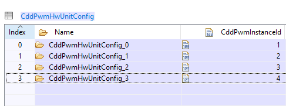
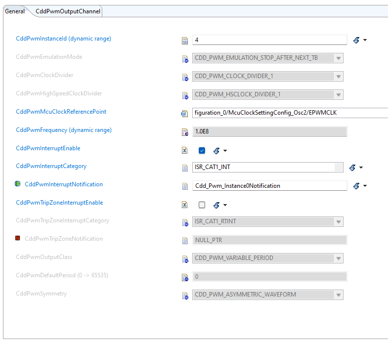
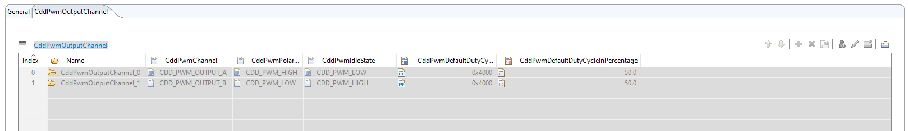
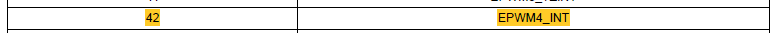
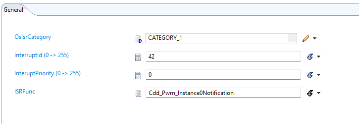
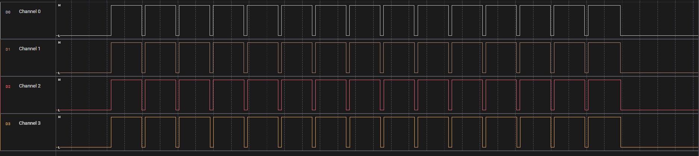
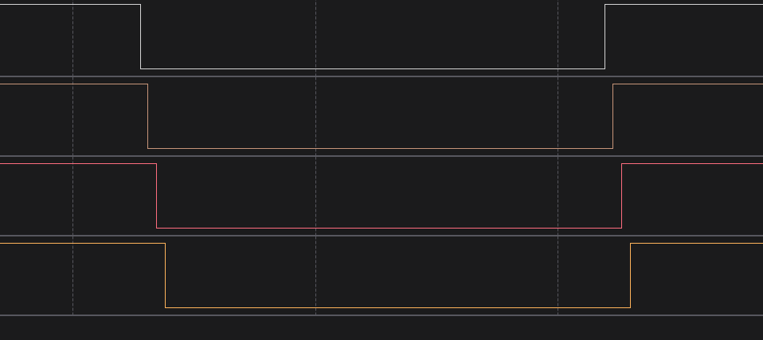

MCAL EPWM Phase Shift and Interrupts Demo#
Overview#
The objective of this lab is to configure the MCAL‑based Enhanced Pulse Width Modulation (EPWM) module to generate deterministic phase‑shifted waveforms on four EPWM channels and to set up interrupt handling entirely through EB Tresos. We will use four channels, programmed with the same PWM frequency and duty‑cycle while each channel receives a unique phase offset (e.g., 0°, 120°, 240°, 360°) by writing the appropriate PhaseShift value to the channel’s registers. One of the channels is additionally configured to generate an interrupt. The resulting waveforms will be observed with a logic analyzer or an oscilloscope to verify the correct duty‑cycle, the precise phase offsets and the interrupt triggered.
Lab Setup#
Hardware Setup#
Required hardware for this lab:
ControlSOM with the supplied USB cable.
Jumper cables (4).
Oscilloscope/Logic Analyzer.
This lab exercise is intended for the F29H85x ControlSOM. Before continuing this lab, please be sure to reference the ControlSOM User Guide for hardware setup details.
Using the supplied USB cable, connect the USB Type-C connector into your C2000 board and the USB Standard Type-A connector into your computer’s USB port.
Please note that the docking station is necessary for this lab.
When you are using the ControlSOM docking station, an additional power supply is needed for the docking station. See the ControlSOM User Guide for more details.
Check the power status LEDs (LED0 and LED1) to confirm that the board is powered and provides a JTAG communication link between the device and CCS.
Later in the lab we will be routing the output pin of the PWM waveform to the input of Oscilloscope/Logic Analyzer, so make sure that you have a jumper cable to facilitate this.
Software Setup#
Required software for this lab:
The device’s MCAL-SDK
Request access to the F29x MCAL-SDK through TI’s website.
The Code Composer Studio (CCS) platform.
See the CCS User’s Guide for more information about this IDE.
The EB Tresos Platform.
Visit the EB Tresos website for more information.
Reconfiguring Modules#
The configuration for this demo is a modification of the Cdd_Pwm_Example_TripZone example provided in the c29X_mcal package. Only the Port, EPWM and OS modules are to be reconfigured. All the modules are configured through EB Tresos.
Configure Port#
You can remove the DIO pin from the PortPin section as we wont be requiring it. The pin was configure for Trip Zone trigger which wont be used in this demo.
Configure EPWM 4 as we will be requiring 4 EPWM instances to demo Phase Shifting. You can pick Channe A/B. For this demo we have used Channel A.
Configure EPWM#
We will use four EPWM instances to perform phase shifting. Hence we will configure EPWM 1, EPWM2, EPWM 3 and EPWM 4 using EB Tresos. Each instance is given a dynamic Id that can be used in MCAL APIs.

Each EPWM instance is configured with clock frequency of 100MHz and a default 50% duty cycle. The wave generated is set to be Asymmetric. We will enable the interrupt in EPWM 4 to trigger an interrupt later (Not necessary for the other EPWM instances). The Prescaler parameters can be set according to user requirements ( This can me later changed using MCAL APIs ). Define the Interupt callback fucntion to be called when the interrupt is triggered later. A refernce image has been given below.

Each EPWM instance ahs two channels:
Channel A
Channel B
Configure and add channels in the CddPwmOutputChannel section. Some parameters are set to their default values which can be customised using the MCAL APIs.

Configure OS#
We will use the OS module to configure OC Counter and Interrupt. Set the type of counter you wish to use. It can either be Hardware ot Software counter. You can also set the maximum alowed value of the counter. To configure the interrupt move top the OsIsr section. Add an interrupt to be triggered by the EPWM. You can opt for Category 1 or Category 2. The interrupt Id is to be set based on the Vector Table prescrived in the F29 TRM. For EPWM 4, the Id in the vector table is 42.

Interrupt priority can be set as per user requirements. However the ISR Fucntion is supposed to be the fucntion the user wants to be called on the interrupt triggering. In this case, it is a function that halts all EPWM activity. The condition for ISR is set using MCAL APIs.

Program Setup#
The MCAL package had numerous APIs to support various modules. This is displayed through the examples provided. The following are the changes to be made to the existing Cdd_Pwm_Example_TripZone example program provided in the c29X_mcal package to suit our lab requirement.
Remove Trip Zone#
Tripzone is not required for the use case, hence we remove its feature by removing the following MCAL APIs:
/* The trip zone was applied for EPWM 2 and EPWM 3 in the example. */
Cdd_Pwm_SetTripZoneAction(CddPwmConf_CddPwmHwUnitConfig_CddPwmHwUnitConfig_1,CDD_PWM_TZ_ACTION_EVENT_TZA,CDD_PWM_TZ_ACTION_HIGH);
Cdd_Pwm_ConfigureTripZoneSignals(CddPwmConf_CddPwmHwUnitConfig_CddPwmHwUnitConfig_1, CDD_PWM_TZ_SIGNAL_OSHT1, TRUE);
Cdd_Pwm_ConfigureTripZoneInterrupt(CddPwmConf_CddPwmHwUnitConfig_CddPwmHwUnitConfig_1, CDD_PWM_TZ_INTERRUPT_OST,TRUE);
Cdd_Pwm_ConfigureTripZoneNotification(CddPwmConf_CddPwmHwUnitConfig_CddPwmHwUnitConfig_1, TRUE);
Add Phase Shift#
Phase shifting is applied in the EPWM module using the following APIs:
/* CddPwmConf_CddPwmHwUnitConfig_CddPwmHwUnitConfig_3 is the symbolic name for EPWM instance 4. */
Cdd_Pwm_ConfigurePhaseShiftLoad(CddPwmConf_CddPwmHwUnitConfig_CddPwmHwUnitConfig_3, TRUE);
/* PHASE_SHIFT is the value by which you want the EPWM 4 to be phase shifted. */
Cdd_Pwm_SetPhaseShift(CddPwmConf_CddPwmHwUnitConfig_CddPwmHwUnitConfig_3, (PHASE_SHIFT));
Add EPWM Interrupt#
This lab demo showcases an interrupt being triggered when the PWM cycle of EPWM 4 reaches 90%. The following APIs help achieve that:
/* CDD_PWM_INT_TBCTR_U_CMPC is the condition for triggering an interrupt. It is triggers the interrupt when the counter value is equal to CMPC. */
Cdd_Pwm_SetInterruptSource(CddPwmConf_CddPwmHwUnitConfig_CddPwmHwUnitConfig_3,CDD_PWM_INT_TBCTR_U_CMPC);
/* CDD_PWM_EVENT_COUNT is the number of times the event can be ignored before triggering the Interrupt. */
Cdd_Pwm_SetInterruptEventCount(CddPwmConf_CddPwmHwUnitConfig_CddPwmHwUnitConfig_3, CDD_PWM_EVENT_COUNT);
Cdd_Pwm_ConfigureInterrupt(CddPwmConf_CddPwmHwUnitConfig_CddPwmHwUnitConfig_3, TRUE);
Cdd_Pwm_EnableNotification(CddPwmConf_CddPwmHwUnitConfig_CddPwmHwUnitConfig_3);
Prior to this the trigger count has to be set to CMPC. The following APIs make it possible:
/* Macro to calculate count at 'x' percent of cycle */
#define INTERRUPT_AT(x) (FULL_CYCLE * x / 100U)
.
.
.
Cdd_Pwm_SetCounterCompareValue(CddPwmConf_CddPwmHwUnitConfig_CddPwmHwUnitConfig_3, CDD_PWM_COUNTER_COMPARE_C,INTERRUPT_AT(90));
Define ISR Function#
The name of ISR Fuction used here should match the name registed in EB Tresos. In this demo, it halts the EPWM activity after hitting 90% of cycle. The CDD_PWM_EVENT_COUNT is set as 15. Hence it generated 15 complete cycles before triggering the interrupt. The ISR function uses here is as follows:
/* Notification function for PWM Instance 3 that stops PWM when 90% cycle is reached */
void Cdd_Pwm_Instance0Notification(void)
{
Cdd_Pwm_Set_Idle();
AppUtils_Printf("All PWM outputs have been stopped\r\n");
}
Results#
The following wave activiy was recorded using a logic analyzer. It dsiplays interrupt being triggered at 90% after 15 cycles. As mentioned before, it ignores the 90% condition 15 time (CDD_PWM_EVENT_COUNT is set to 15) before triggering the interrupt.

The next image shows phase shifting of EPWM instances. Each instances is sequentially shifted depending on the user given value.
